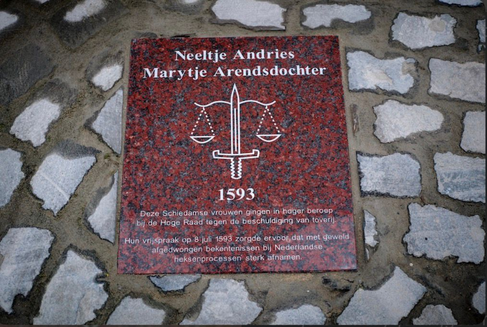

Samenvatting van ons onderzoek
De heksenverbrandingen in Schiedam laten zien hoe diep het geloof in hekserij in de 16e en 17e eeuw in de Nederlandse samenleving verankerd was. Mensen beschuldigden vooral vrouwen van hekserij uit angst, jaloezie of onbegrip, en het stadsbestuur trad hierop op door rechtszaken te voeren en, in sommige gevallen, de verdachten te martelen en te verbranden. In Schiedam waren de heksenprocessen opvallend intensief: er zijn 41 processen bekend, waarvan 8 eindigden in een brandstapel, wat de stad tot één van de meest actieve plaatsen in de Nederlanden maakte op dit gebied.
Het bijzondere aan de Schiedamse processen is dat twee vrouwen, Neeltje Andries en Marytje Arendsdr., erin slaagden zich te verdedigen via het juridische systeem. Door hun beroep bij de Hoge Raad werden ze volledig vrijgesproken. Dit was uitzonderlijk, want in veel andere steden werden bekentenissen onder dwang vrijwel altijd gevolgd door executies. Hun zaak zorgde voor een juridisch keerpunt: voortaan werd marteling terughoudender toegepast en werd het bijna onmogelijk om vrouwen in Holland nog voor hekserij te vervolgen.
Kortom, de Schiedamse heksenprocessen illustreren zowel de maatschappelijke angst voor hekserij als het begin van een meer rationele en juridisch verantwoorde aanpak in Nederland. Dankzij de doorzettingskracht van Neeltje en Marytje veranderde de rechtspraktijk, waardoor deze zwarte bladzijde in de Schiedamse geschiedenis uiteindelijk een einde kreeg.
Antwoord op de onderzoeksvraag
- Roddels en beschuldigingen — Buren en stadsbewoners wezen iemand aan als heks, vaak door jaloezie, ruzie of angst.
- Getuigenverklaringen — Mensen verklaarden dat de verdachte ziekten, ongeluk of rampspoed had veroorzaakt.
- Bekentenissen — Verdachten konden bekennen onder druk of dreiging van marteling, ook al hadden ze niets gedaan.
- Ter purge stellen — Sommige vrouwen, zoals Neeltje en Marytje, lieten zichzelf vrijwillig opsluiten om bewijs te verzamelen en hun onschuld te bewijzen.
- Proceslocatie — Rechtbanken en openbare plekken zoals de Grote Markt, zodat iedereen het kon zien.
- Buitengewone gevallen — Vrijspraak bij de Hoge Raad (zoals bij Neeltje en Marytje) veranderde de rechtspraktijk in Holland.
“Na dit vonnis leek het alsof alle toverij uit het land was verdreven — sindsdien was het in Holland vrijwel onmogelijk geworden een van toverij beschuldigde vrouw strafrechtelijk te vervolgen.”
— Huygens Instituut, Digitaal Vrouwenlexicon van Nederland
Reflectie
Wat ging goed?
Ons eindproduct maken ging goed. We hebben uiteindelijk een duidelijk werkstuk afgeleverd en alle deelvragen beantwoord.
Wat was moeilijk?
Het was moeilijk om informatie te vinden over dit onderwerp, omdat het een lastig onderwerp is. Veel teksten waren lang en ingewikkeld, waardoor het veel tijd kostte om de belangrijkste informatie eruit te halen.
Wat kon beter?
De verdeling van de taken kon beter, zodat iedereen evenveel kon bijdragen aan het werkstuk. Op die manier had het proces voor het hele team makkelijker en overzichtelijker kunnen verlopen.
Wat hebben wij geleerd?
We hebben veel geleerd over de geschiedenis van heksenvervolgingen in Schiedam, hoe beschuldigingen werden gemaakt en hoe processen verliepen. We zagen ook hoe bijzonder het was dat Neeltje Andries en Marytje Arendsdr. hun onschuld konden bewijzen en zo de rechtspraktijk veranderden.
Daarnaast hebben we geleerd hoe belangrijk samenwerken is bij een PWS: informatie zoeken, teksten samenvatten en taken verdelen zijn uitdagend, maar als je als groepje hand in hand werkt, lukt het uiteindelijk allemaal prima.
Nagedachtenis in Schiedam
De erfenis van de Schiedamse heksenvervolgingen is tot op de dag van vandaag zichtbaar in de stad. In 2022 werd op de Grote Markt — de plek waar de verbrandingen plaatsvonden — een gedenkteken onthuld ter ere van Neeltje Andries en Marytje Arendsdr. Bijna 430 jaar na hun vrijspraak krijgen zij de erkenning die zij verdienen. De Sint Janskerk staat er nog altijd als stille getuige van wat hier in de zestiende eeuw is gebeurd.
